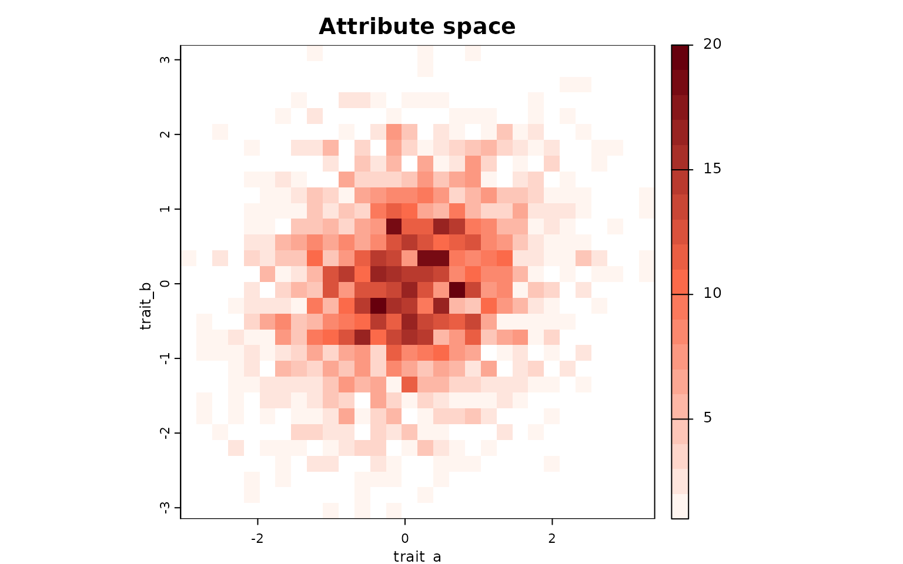
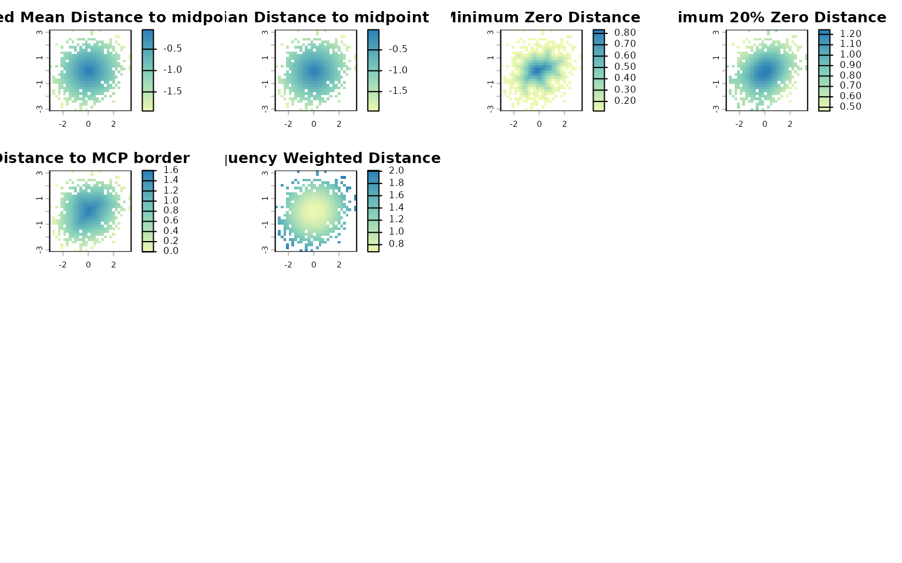

Mapping species richness in attribute space
Bruno Vilela
2025-07-07
Source:vignettes/Mapping-species-richness-in-attribute-space.Rmd
Mapping-species-richness-in-attribute-space.RmdOverview
Species richness and community structure can also be represented in
attribute space, where axes correspond to any quantitative information
that can be attributed to a species. The letsR package
provides tools to construct and analyze presence–absence matrices (PAMs)
in attribute space, allowing researchers to examine biodiversity
patterns beyond geography and environment.
This vignette demonstrates how to:
- Build a PAM in attribute space using
lets.attrpam(); - Visualize species richness with
lets.plot.attrpam(); - Compute descriptors per attribute cell using
lets.attrcells(); - Aggregate descriptors to the species level with
lets.summarizer.cells(); and - Cross-map attribute metrics to geographic space for integrative analysis.
Simulating trait data and building the AttrPAM
We begin by generating a dataset of 2,000 species with two correlated traits:
set.seed(123)
n <- 2000
Species <- paste0("sp", 1:n)
trait_a <- rnorm(n)
trait_b <- trait_a * 0.2 + rnorm(n)
df <- data.frame(Species, trait_a, trait_b)
# Build the attribute-space PAM
attr_obj <- lets.attrpam(df, n_bins = 30)Visualizing richness in attribute space
The lets.plot.attrpam() function plots the richness
surface across the bivariate trait space.
lets.plot.attrpam(attr_obj)
Each cell represents a unique combination of traits (binned values of
trait_a and trait_b), and the color intensity
indicates the number of species falling within that bin.
Computing attribute-space descriptors
The function lets.attrcells() quantifies structural
properties of each cell in the trait space, including measures of
centrality, isolation, and border proximity.
attr_desc <- lets.attrcells(attr_obj, perc = 0.2)
head(attr_desc)
#> Cell_attr Richness Weighted Mean Distance to midpoint
#> 3 1 0 -2.326864
#> 4 2 0 -2.249095
#> 5 3 0 -2.174679
#> 6 4 0 -2.103971
#> 7 5 0 -2.037358
#> 8 6 0 -1.975254
#> Mean Distance to midpoint Minimum Zero Distance Minimum 10% Zero Distance
#> 3 -2.353019 0 0.7875427
#> 4 -2.275839 0 0.7238193
#> 5 -2.202012 0 0.6742795
#> 6 -2.131885 0 0.6362405
#> 7 -2.065836 0 0.6116810
#> 8 -2.004267 0 0.5974101
#> Distance to MCP border Frequency Weighted Distance
#> 3 0 2.401182
#> 4 0 2.325796
#> 5 0 2.253747
#> 6 0 2.185353
#> 7 0 2.120959
#> 8 0 2.060930We can visualize these metrics using
lets.plot.attrcells():
lets.plot.attrcells(attr_obj, attr_desc)
Each panel represents a different descriptor (e.g., distance to midpoint, distance to border, weighted isolation) mapped across the trait space.
Summarizing descriptors by species
To derive species-level summaries, we can aggregate descriptor values
across all cells occupied by each species using the
lets.summarizer.cells() function.
attr_desc_by_sp <- lets.summaryze.cells(attr_obj, attr_desc, func = mean)
head(attr_desc_by_sp)
#> Species Richness Weighted Mean Distance to midpoint Mean Distance to midpoint
#> 1 sp1 16 -0.50820192 -0.4896199
#> 2 sp2 15 -0.12253919 -0.1470435
#> 3 sp3 5 -0.84093748 -0.8298832
#> 4 sp4 8 -0.65172785 -0.6818160
#> 5 sp5 14 -0.07626174 -0.1050365
#> 6 sp6 2 -0.95462516 -0.9441664
#> Minimum Zero Distance Minimum 10% Zero Distance Distance to MCP border
#> 1 0.4618802 1.1195434 1.2701706
#> 2 0.8164966 1.2218190 1.5011107
#> 3 0.3265986 0.8310473 0.7745967
#> 4 0.2309401 0.9311691 1.0392305
#> 5 0.8082904 1.2360965 1.6041613
#> 6 0.2309401 0.7661288 0.6733003
#> Frequency Weighted Distance
#> 1 0.8225743
#> 2 0.6921972
#> 3 1.0446166
#> 4 0.9069837
#> 5 0.6857976
#> 6 1.1319803This produces a data frame in which each row corresponds to a species, and each column corresponds to the mean descriptor value across the cells where that species occurs.